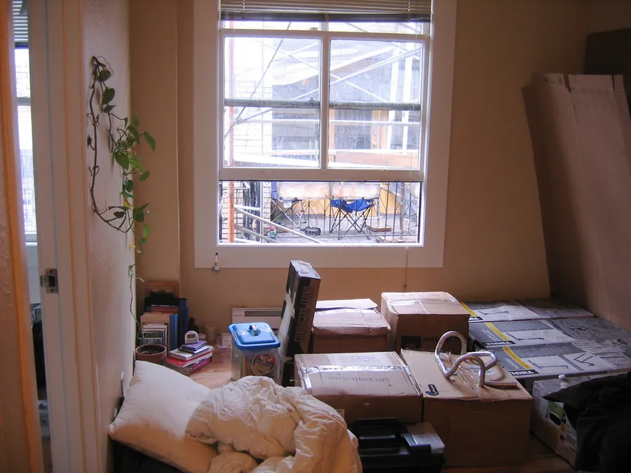

Home · Services · About · Contact · Reviews
Your belongings are often more salvageable than they look — if they are treated fast. Contents cleaning catalogues, packs out, cleans and stores what can be saved, from electronics and clothing to documents and photos.

Catalogued removal, off-site cleaning and climate-controlled storage of salvageable belongings during restoration.
Typical time: Pack-out day + storage duration
Specialized decontamination of smoke-exposed electronics — corrosion starts within hours of exposure.
Typical time: Varies by item count
Ozone/ultrasonic cleaning of smoke-damaged clothing, drapes and upholstery.
Typical time: 3-7 days typical turnaround
Freeze-drying and restoration of water/fire-damaged documents, photos and books.
Typical time: 1-3 weeks for severe cases
After a bedroom fire, the family moves out for two weeks. Salvageable furniture, clothing and electronics are catalogued, packed out and cleaned off-site; documents go for freeze-drying. Pack-out and storage $1,000–$5,000 (national range).
Catalogued removal of salvageable belongings to an off-site facility for cleaning and climate-controlled storage while your home is restored. Typical range $1,000–$5,000.
Often yes if treated quickly — corrosion starts within hours of exposure. Typical range $200–$800. Do not power on smoke-exposed electronics before they are cleaned.
Yes, with ozone/ultrasonic cleaning. Typical range $300–$1,500, with 3–7 days typical turnaround.
Freeze-drying restores many water- and fire-damaged documents, photos and books. Typical range $500–$2,500; 1–3 weeks for severe cases.
Call now — a local pro inventories your belongings and tells you what can be saved.
📞 Call (800) 555-0147 Now